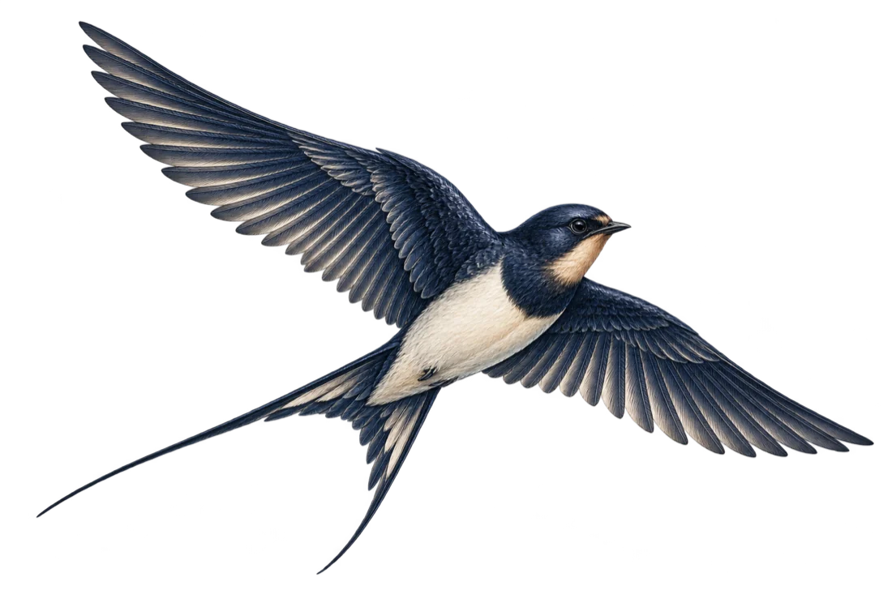
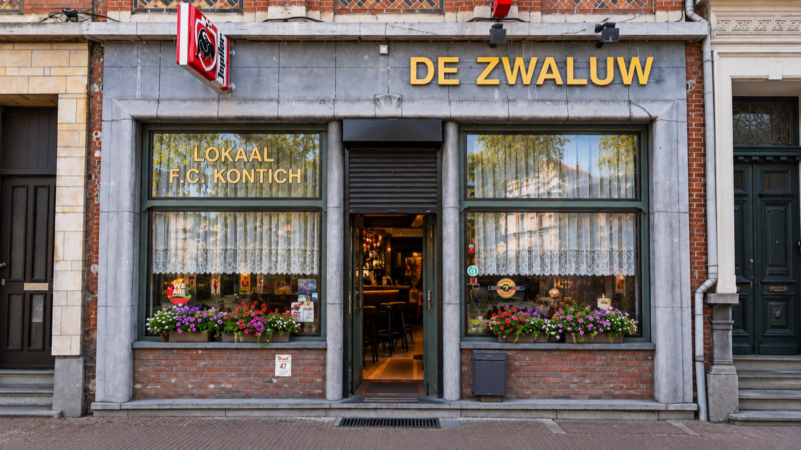

KONTICH · REEKS 1A
GEBOREN
OM TE VLIEGEN.
Samen aan de tafel. Voluit voor de ploeg.
ELKE MATCH. ÉÉN PLOEG.
Alle beker- en competitiewedstrijden · Seizoen 2026–2027
Wedstrijden, uitslagen en individuele punten volgens de ATC-wedstrijdbladen ↗. Elk bolletje is een set: crème voor De Zwaluw, rood voor de tegenstander.
KLASSEMENT
| # | PLOEG | GS | W | G | V | SETS |
|---|---|---|---|---|---|---|
| 01 | NXT Nieuw | 5 | 5 | 0 | 0 | 46 |
| 02 | Roadhouse 1A · 5e | 5 | 5 | 0 | 0 | 38 |
| 03 | Foosforce 1A · 1e | 5 | 4 | 0 | 1 | 40 |
| 04 | Zenakalm 2A · 1e | 5 | 4 | 0 | 1 | 30 |
| 05 | Halverwegen 1A · 6e | 5 | 2 | 1 | 2 | 0 |
| 06 | BP Ratten 1A · 4e | 5 | 2 | 0 | 3 | -6 |
| 07 | Y&O 1A · 7e | 5 | 1 | 1 | 3 | -32 |
| 08 | Peeke Binne 2A · 4e | 5 | 1 | 0 | 4 | -22 |
| 09 | De Zwaluw WIJ 1A · 8e | 5 | 0 | 0 | 5 | -42 |
| 10 | Paradijske ('t) 2A · 2e | 5 | 0 | 0 | 5 | -52 |
Stand op 7 november 2026.
De volgorde volgt ATC.
Grijs label = eindstand vorig seizoen (2025–2026).
DE GEZICHTEN ACHTER DE VLEUGELS.

24 punten · 7 matchen
A5391 ↗

22 punten · 8 matchen
A4670 ↗

15 punten · 7 matchen
A4005 ↗

14 punten · 8 matchen
A7827 ↗

11 punten · 6 matchen
A5414 ↗

10 punten · 6 matchen
A4948 ↗

2 punten · 1 match
A7958 ↗

2 punten · 3 matchen
A8102 ↗

0 punten · 1 match
A5392 ↗

0 punten · 0 matchen
A5390 ↗
0 punten · 0 matchen
Foto volgt
A7826 ↗
Klik op een portret en bekijk de foto groot. Spelers en rankings zoals vermeld op ATC ↗.

HIER ZIJN
WE THUIS.
Café De ZwaluwMolenstraat 47, 2550 KontichRoute naar het café
Contact met de ploeg verloopt via het ATC-clubprofiel ↗ (inloggen vereist).
Clubsite voor De Zwaluw. De kalender volgt de algemene ATC-kalender ↗ en de wedstrijdbladen van de ploeg. Laatst automatisch gecontroleerd op 7 november 2026. De site synchroniseert dagelijks met ATC. De zwaluw is een gegenereerd sfeerbeeld.